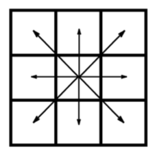
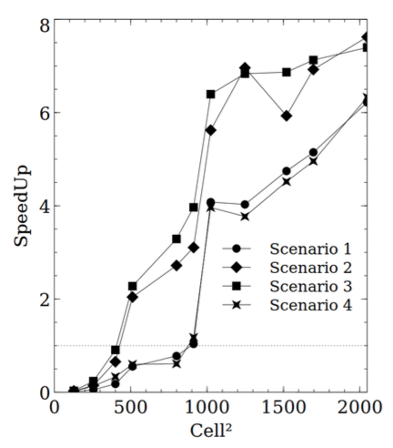
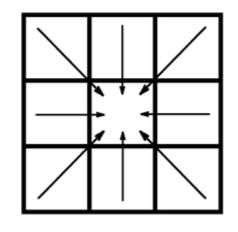

Forest Fires and Parallel Cellular Automata, going from 8x to 240x faster with GPUs
Forest fire numerical models use Cellular Automata (CA) to simulate fire propagation. A grid or mesh of the terrain is provided, along with maps for parameters like fuel properties, wind speed, humidity and others. The CA is basically a way to propagate an ignition state, based on minimum travel times, between adjacent cells.
Other methods exist, like vector based methods, that compute the position of the fire front in consecutive time steps, or partial differences equation (PDE), that allow for a two way coupling of the fire model and the weather models.
Although the last type is much more accurate, the first two are the de facto tools for fire modeling due to the compromise between computing speed and accuracy.
In this blog post, I'll show you two versions of a CA model, a trivial and a parallel version I developed during my Masters. Both versions were ported to Nvidia GPUs with the aim of speeding up the existing single core implementation.
Initially, a direct, naive port was attempted which wasn't very performant. This lead me to reformulate the algorithm so that it was fully parallel and therefore, more suitable to the many-core architecture of the GPU.
Performance increase was only achieved with a rethinking of the algorithm, not by tweaking and fine tunning the GPU parameters of a flawed approach.
Naive algorithm
The existing algorithm was the following:
- An outer loop iterates over time and an inner loop iterates in space, over the rows and columns of the terrain grid.
- The inner loop looks for active cells in a map of ignition times and propagates the fire outwards, to each one of the 8 neighbours.

- The ignition time of each neighbour is computed with the formula below. The ignition map is then updated:
where ROS is the Rate Of Spread, basically the flame speed in the neighbour direction, function of wind, moisture, terrain, etc; l is the distance between cells and t is the time in the central cell.
If you press Run, you'll see an animation of the fire propagation with the naive version of the CA. Notice that each square represents a portion of the terrain and the colour is just a linear scale that maps to ignition time. The scale goes from blue, to red, white is the starting point and black means the cell is unburned.
This is the JavaScript code that runs the spatial loop. If you inspect this page, you'll see a very similar code:
function naiveSpatialLoop(){
t = tn;
tn = Infinity;
//Spatial loop that looks for active cells,
//ie, cells with ignition time = t
for ( row = 0; row < rows; row++){
for ( col = 0; col < cols; col++){
var idx = col + cols*row;
//Update tn, so that tn is the minimum
//ignition time for all cells,
//in a given iteration
if ( ignitionMap[idx] > t &&
tn > ignitionMap[idx] ){
tn = ignitionMap[idx];
continue;
}
//skips cells that already burned
if ( ignitionMap[idx] !== t )
continue;
//propagate fire for all 8 neighours
for (var n = 0; n < 8; n++){
//neighbour index calc
var ncol = col + ncols[n];
var nrow = row + nrows[n];
var nidx = ncol + nrow*cols;
//Check if neighbour is inbound
if ( !(nrow >= 0 && nrow < rows &&
ncol >= 0 && ncol < cols) )
continue;
// skip if cell has already burned
if ( ignitionMap[nidx] < t )
continue;
//Compute neighbour cell ignition time,
//based on the propagation speed
//tcell = t + cell dist / flame_speed
igntime = t + ndist[n] / ROS;
//Update ignition time in the map only
//if the the current time is smaller
if(igntime < ignitionMap[nidx]){
ignitionMap[nidx] = igntime;
}
//Update tn
if( igntime < tn )
tn = igntime;
}
}
}
}
As I said, porting this algorithm to GPUs in a straightforward way resulted in very poor performance. I associated each cell with a GPU thread and ended up with threads writing in each other's memory and dealling with race conditions.
Also, the process doesn't have a great degree of parallelism because at each time step, very few cells are actually propagating and thus, require computation. Here's the speedups for several scenarios with different values for wind, fuel and moisture:

As you can see, very far from the two orders of magnitude in performance increase you usually get with GPUs.
Smarter approach
The algorithm we've seen mimics the way fire propagates in real life, propagating the fire to adjacent cells, one at the time.
Ignition times in surrounding cells are calculated, as we have seen, like this:
igntime = t + ndist[n] / ROS;
if(igntime < ignitionMap[nidx]){
ignitionMap[nidx] = igntime;
}
During the process, the ignition time in each cell is continuously updated, so that if two cells propagate to the same cell, the minimum time of the two is considered and stored as the true ignition time.
Looking at the problem in another way, what we have is a condition that can be stated as follows: the ignition time of each cell, is always the minimum of the set of ignition times accounted from the 8 surrounding cells.
From this, instead of computing outward ignition times at each neighbour, I compute the ignition time at the inner cell.

But now the question is, how can I compute ignition times from cells that haven't burned yet?
The solution is to do it iteratively, ie, to start from a random ignition map and compute each new map function of the previous one, until there is virtually no difference between any two consecutive ignition maps.
This is how the spatial loop looks like:
function smartSpatialLoop(){
for ( row = 0; row < rows; row++){
for ( col = 0; col < cols; col++){
var idx = col + cols*row;
//skip ignition cell
if (ignitionMap[idx] === 0)
continue;
var minArray = [];
for (var n = 0; n < 8; n++){
//neighbour index calc
var ncol = col + ncols[n];
var nrow = row + nrows[n];
var nidx = ncol + nrow*cols;
//Check if neighbour is inbound
if ( !(nrow >= 0 && nrow < rows
&& ncol >= 0 && ncol < cols) )
continue;
//compute ignition time considering that the
//flame moves from the neighbour to the center cell
var igntime = ignitionMap[nidx]
+ ndist[n] / rosmap[nidx];
minArray.push(igntime);
}
//associate the minimum of the ignition times
//to the ignition time of the center cell
ignitionMap[idx] = Math.min.apply(null, minArray);
}
}
}
The algorithm is much more efficient because I no longer spend most of the time looking for empty cells. Also, because of its parallelism, there's no longer race conditions and consequent serialization. The performance gains are around two orders of magnitude.

The two models side by side, with the same iteration interval of 100ms. Notice that the conditions are random, so each time you refresh the page, you'll get a slightly different simulation:
And that's it. If you want to know more just follow the link and read the white paper.